The Dawn of Meaning
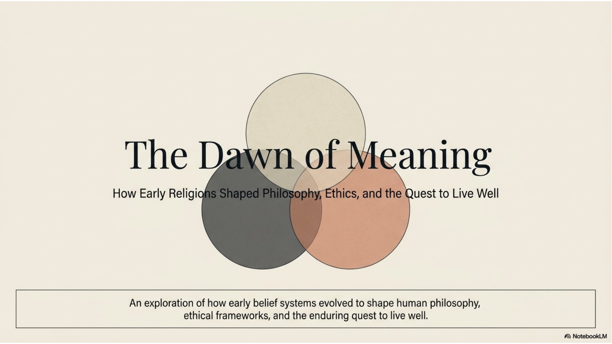
Early religions did more than tell sacred stories. They helped people ask deeper questions about reality, identity, morality, nature, society, and the sacred. A myth can explain where something came from, but these traditions also asked what human beings should do with that knowledge.
The central question in this chapter is how should we live well? Zoroastrianism, Jainism, Taoism, Confucianism, and Shinto each answer that question differently. Some emphasize moral choice. Some emphasize non-harm. Some emphasize harmony with nature, proper relationships, or reverence for sacred presences in the world.
This is why early religions are important in World Religions 30: they show religion becoming a complete way of interpreting life. They include philosophy because they ask what is real and true. They include ethics because they guide action. They include ritual because beliefs are practiced through repeated, symbolic actions in community.
The traditions in this chapter are not identical. Treating them as if they all teach the same thing is lazy thinking. A stronger answer recognizes both the common human search for meaning and the distinct way each tradition responds to that search.
Philosophy, Ethics, and Ritual
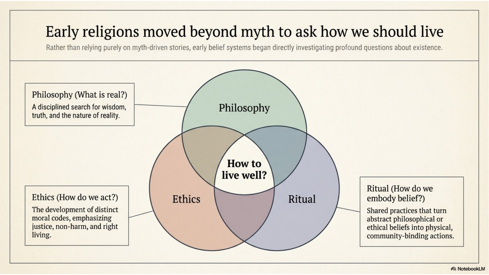
Philosophy is the disciplined search for wisdom, truth, and the nature of reality. In these traditions, philosophy asks questions such as: What is the universe like? What is the self? What is the source of order? What does wisdom require?
Ethics asks how human beings should act. It focuses on moral conduct, responsibility, justice, non-harm, truthfulness, respect, and right relationships. Ethics turns belief into choices that affect other people and the natural world.
Ritual is belief expressed through physical and communal action. Rituals may include prayer, purification, fasting, meditation, shrine practice, funeral practice, sacred movement, or ceremonies connected to birth, marriage, and death. Rituals make abstract ideas visible and shared.
Early religions differ from more myth-driven belief systems because they are not only concerned with sacred stories. They still use myth and symbol, but they also develop systems of thought and practice. A complete answer about early religions should mention this movement toward philosophy, ethics, and ritual, not merely the presence of supernatural stories.
The best way to understand this chapter is to keep asking three questions: What does this tradition say is ultimately important? What problem is it trying to solve? What kind of life does it ask people to practice?
Zoroastrianism: Reality as a Struggle for Truth
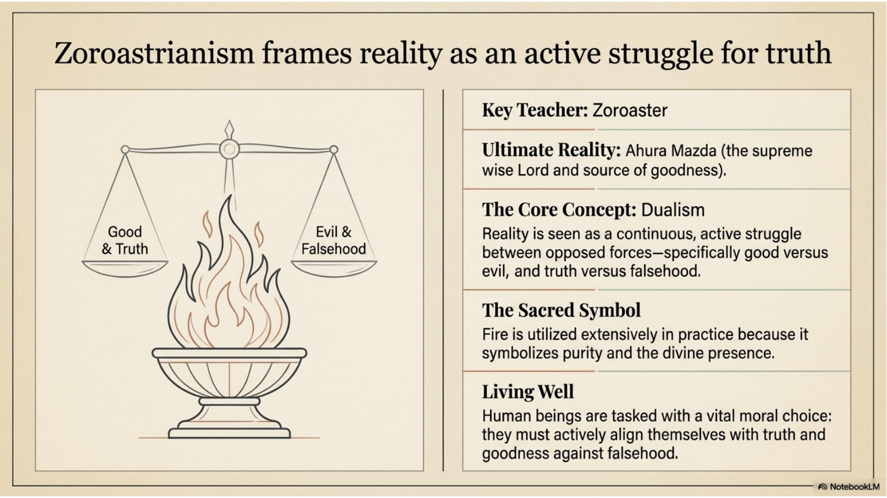
Zoroastrianism developed in ancient Persia and is traditionally associated with the teacher Zoroaster, also known as Zarathustra. The historical dates for Zoroaster are debated, but the course tradition places him sometime before 600 BCE. He challenged the idea that many competing gods controlled the spiritual world and taught that the universe was governed by Ahura Mazda, the Wise Lord.
The core idea of Zoroastrianism is dualism: reality is understood as a serious struggle between good and evil, truth and falsehood, order and destruction. Ahura Mazda represents wisdom, goodness, and truth. The opposing destructive force is often associated with Angra Mainyu, the spirit or power of evil and denial of truth.
This struggle is not only cosmic. It is also moral and personal. Human beings are expected to choose truth, goodness, and right action rather than falsehood and evil. In Zoroastrianism, moral choices matter because each person participates in the larger struggle between good and evil.
Fire is one of the most important symbols in Zoroastrianism. It symbolizes purity, light, truth, and divine presence. Zoroastrians are not simply “worshipping fire.” Fire is a visible symbol of sacred purity and the presence of Ahura Mazda.
Zoroastrian teaching also includes ideas about the soul, judgment, and the consequences of moral action. The course text describes the soul approaching a bridge of judgment where good and evil deeds are weighed. This reinforces the central belief that a person’s life has moral consequences.
The major sacred writings are connected to the Avesta. The Gathas, hymns associated with Zoroaster, are especially important. Zoroastrian ideas about judgment, afterlife, and the battle between good and evil later influenced religious thought beyond Persia.
Jainism: Radical Non-Harm Toward Living Beings
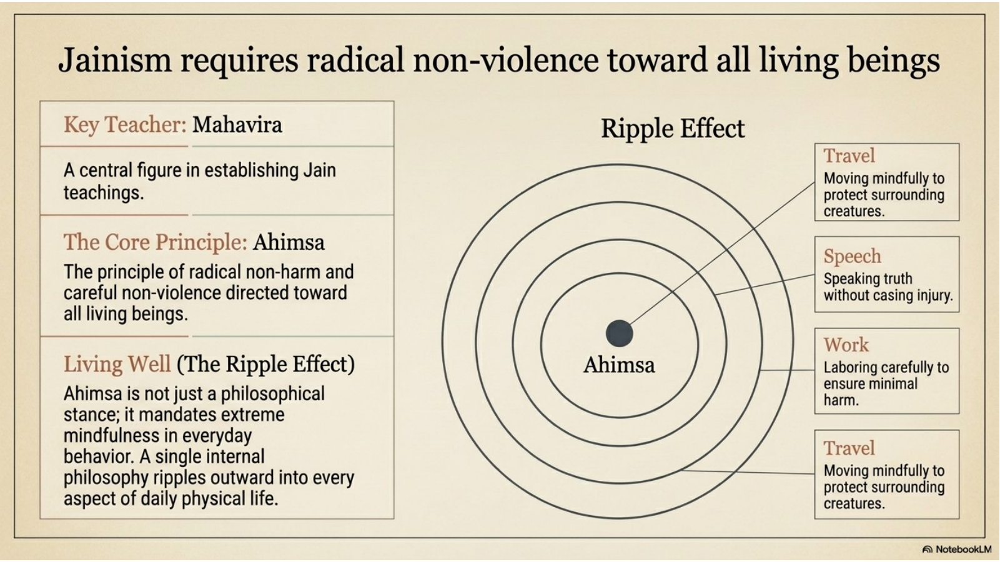
Jainism is strongly associated with Mahavira, also called Vardhamana. Jain tradition does not usually treat Mahavira as the original founder. Instead, he is understood as a great teacher who re-established an ancient path of liberation. He is called a jina, meaning a conqueror: one who conquers selfish desire and attachment.
The central Jain principle is ahimsa, or non-harm. Ahimsa is more than avoiding obvious violence. It means trying to reduce harm toward all living beings through diet, speech, work, travel, and everyday conduct. This is why Jain practice is often associated with vegetarianism, careful movement, and deep concern for animals, insects, plants, and the environment.
Jainism teaches that actions have consequences through karma. The soul, or jiva, is reborn through many lives. The goal is moksha, liberation from the cycle of rebirth. Liberation is pursued through meditation, self-discipline, and right conduct.
Jains are encouraged to live by five major practices: non-violence, truthfulness, non-stealing, celibacy or sexual discipline, and non-possession. These practices focus a person away from selfish attachment and toward liberation.
Some Jain monks and nuns demonstrate ahimsa in extremely careful ways. They may cover their mouths to avoid inhaling insects or sweep the ground before walking or sitting. These practices may seem extreme to outsiders, but they show the seriousness with which Jainism treats the moral value of living beings.
Jainism also teaches humility about truth. Because truth can be seen from different perspectives, Jains are cautious about absolute claims. This connects to ahimsa: if people recognize that their perspective is limited, they are less likely to dominate or harm others.
Taoism: Harmony with the Natural Order
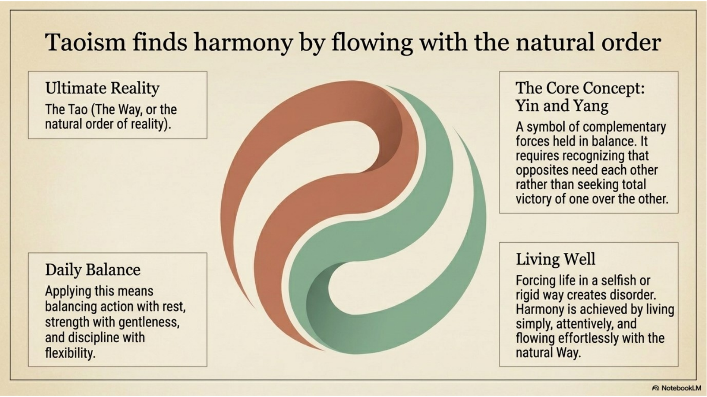
Taoism developed in China around the idea of the Tao, meaning “the Way.” The Tao is the natural order, the deep pattern of reality, and the source of harmony. It is not easy to define because it is larger than ordinary language. Taoism is less interested in forcing reality into rigid categories and more interested in learning to live with the flow of reality.
The tradition is associated with Lao Tzu or Laozi, the “old master,” who is traditionally connected to the Tao Te Ching. Taoism is also strongly associated with Chuang Tzu or Zhuangzi, whose stories made Taoist ideas vivid and practical.
A key Taoist idea is yin and yang. Yin and yang are complementary forces that need balance. They are not the same as good and evil. A stronger explanation says they represent patterns such as rest and action, softness and strength, darkness and light, receiving and giving. The goal is not for one side to destroy the other; the goal is balance.
Wu wei is another central Taoist teaching. It is often translated as “not doing” or “non-forced action.” Wu wei does not mean laziness. It means acting without unnecessary force, ego, or resistance to nature. A person practicing wu wei acts effectively because they are aligned with the situation rather than trying to dominate it.
Harmony matters in Taoism because forcing life in a rigid, selfish, or controlling way creates disorder. Living simply, flexibly, and attentively with the Tao leads to balance. In daily life, this can mean balancing work and rest, discipline and flexibility, strength and gentleness, speech and silence.
Taoism later developed religious forms as well as philosophical ones. Religious Taoism includes rituals, deities, health practices, and traditions such as Tai Chi, Chinese medicine, and acupuncture, all of which connect to the goal of balance and the flow of life-energy, or chi.
Chuang Tzu’s Butterfly Story and the Question of Reality
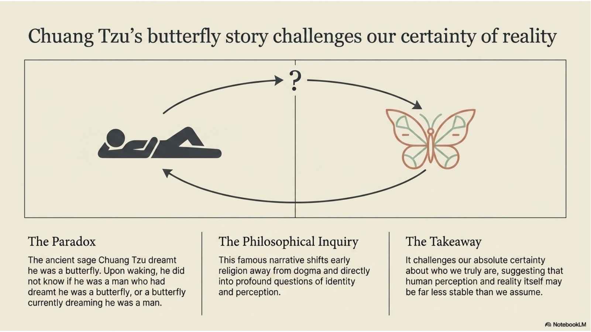
The story of Chuang Tzu’s butterfly is one of the most famous Taoist reflections on identity and perception. In the story, Chuang Tzu dreams that he is a butterfly. When he wakes, he wonders whether he is Chuang Tzu who dreamed he was a butterfly, or a butterfly now dreaming that he is Chuang Tzu.
The point is not simply that dreams are strange. The story challenges certainty. It asks how we know what is real, how stable identity really is, and whether human perception can fully grasp reality. It pushes the reader away from arrogance and toward humility.
This story connects directly to Taoism because Taoism distrusts rigid certainty. The world is fluid, changing, and deeper than human categories. Chuang Tzu uses paradox and story to teach that wisdom often begins when people stop pretending they control or fully understand everything.
For assignment answers, focus on the question the story raises: What is the boundary between reality and perception, and how certain can we be about who we are? A weak answer only retells the dream. A strong answer explains what the dream reveals about identity, perception, and the limits of certainty.
Confucianism: Moral Character and Social Harmony
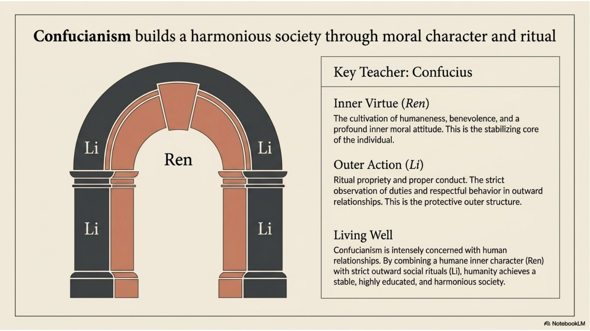
Confucianism is associated with Confucius, also known as Kong Fuzi, who lived from 551 to 479 BCE. Confucianism is sometimes described as a philosophy and sometimes as a religion. That debate exists because Confucianism is practical and ethical, but it also teaches a sacred Way of Heaven and uses ritual to shape human life.
Confucius lived during a period of social and political disorder. His response was not withdrawal from society. His answer was moral cultivation: people must become better through learning, virtue, proper conduct, and responsible relationships.
Two terms are essential: ren and li. Ren, also written jen, means humaneness, benevolence, empathy, goodwill, and moral concern for others. Li means ritual propriety, proper conduct, and respectful outward behaviour. Ren is the inner moral attitude; li is the disciplined outward expression of that attitude.
Confucianism teaches that society becomes harmonious when people practice virtue in their relationships. Proper behaviour is not empty politeness. It trains people to respect parents, elders, rulers, spouses, siblings, friends, and community members.
The Five Relationships are father and son, ruler and citizen, husband and wife, older and younger sibling, and friend and friend. They are often misunderstood as one-sided hierarchy. The stronger interpretation is mutual responsibility: each person has duties that should protect harmony and dignity.
Other Confucian virtues include yi (rightness), chih or zhi (wisdom), and hsin or xin (faithfulness and trustworthiness). Together with ren and li, these virtues shape a person into a reliable member of family, society, and political life.
Shinto: Reverence, Kami, and Ritual Purity
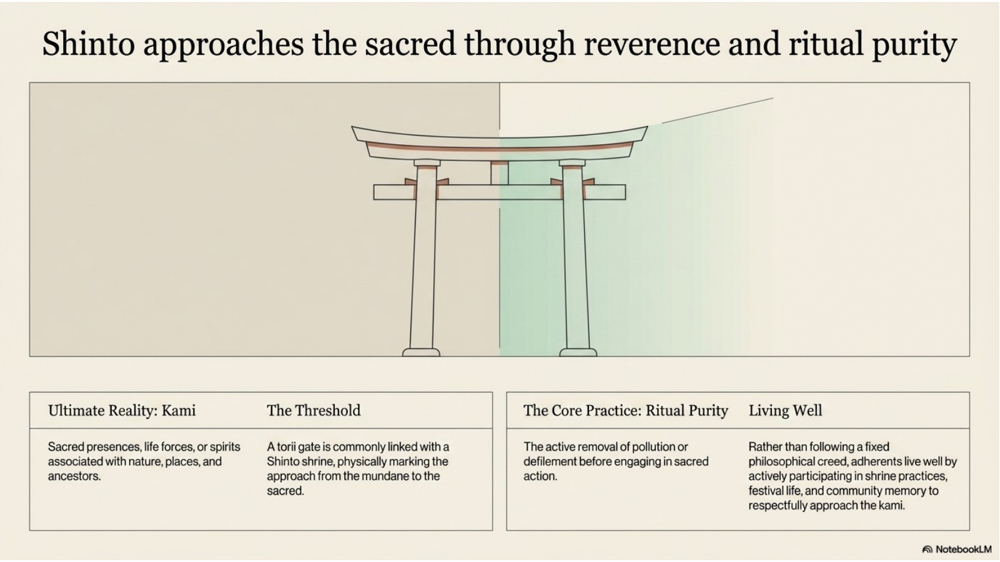
Shinto is a Japanese religious tradition with no single founder and no single official creed. It is deeply connected to place, nature, ancestors, festivals, shrines, and reverence for sacred presences.
The key term is kami. Kami are sacred presences or spirits associated with nature, places, ancestors, forces of life, and important realities within the world. Kami are not simply “gods” in the same sense used in some Western traditions. They are sacred presences that call for reverence and respectful practice.
Shinto mythology includes the story of Izanagi and Izanami, who are connected to the creation of the Japanese islands. Another major figure is Amaterasu, the sun goddess, who became one of the most important kami in Shinto tradition.
A torii gate marks the approach to a Shinto shrine. It functions as a threshold between ordinary space and sacred space. Passing through a torii is a symbolic movement into a place where a person should act with reverence and awareness.
Ritual purity matters because people prepare themselves to approach the kami respectfully. Impurity does not always mean moral guilt. It can refer to pollution, defilement, contact with death, disorder, or other conditions that require purification before sacred action.
Shinto purification practices include washing, prayers called norito, rituals such as yutate, and larger purification ceremonies. Shrine practice matters because it connects people to sacred place, community memory, festival life, and reverence for the living world.
Taoism and Confucianism: Different Paths Toward Harmony
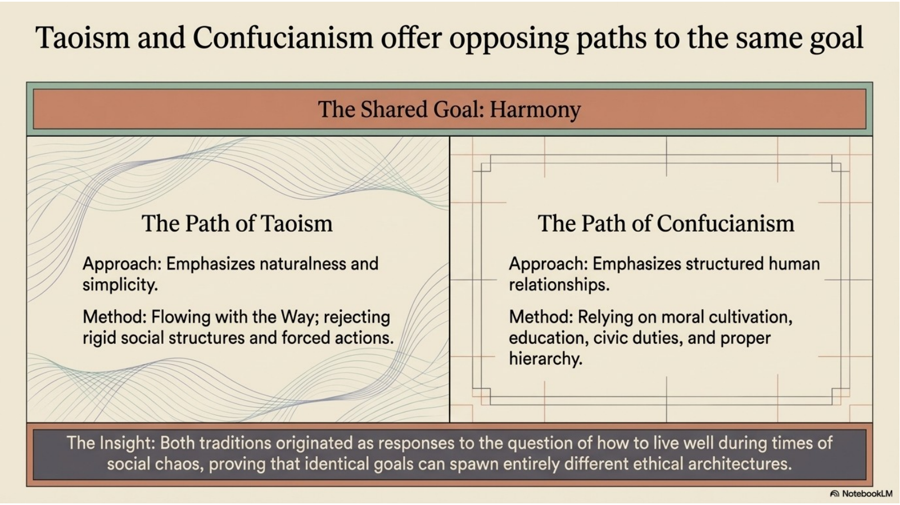
Taoism and Confucianism both value harmony, but they pursue it through different paths. This is one of the most important comparisons in the chapter.
Taoism emphasizes naturalness, simplicity, flexibility, and non-forced action. It warns against rigid social structures, ego, needless control, and actions that resist the natural order. Taoism answers “How should we live well?” by saying that people should live in alignment with the Tao.
Confucianism emphasizes moral cultivation, education, duty, ritual propriety, and proper relationships. It does not tell people to withdraw from society. It tells people to improve society by becoming virtuous within families, communities, and governments.
The shared goal is harmony. The difference is method. Taoism finds harmony by flowing with nature and reducing artificial force. Confucianism finds harmony by training human behaviour through virtue, ritual, learning, and relationship duties.
A strong comparison avoids two bad answers. First, do not say they are exactly the same. Second, do not say they are complete opposites. They are different responses to the same problem: social chaos, human selfishness, and the difficulty of living well.
Five Foundational Answers to Human Existence
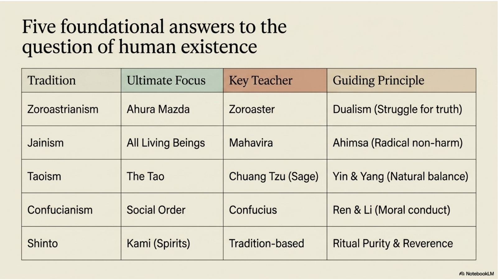
Each tradition in this chapter gives a different answer to the question of human existence. The traditions are not interchangeable. Their differences matter because each one identifies a different central problem and a different path toward right living.
Zoroastrianism focuses on truth, goodness, and the moral struggle against evil. Jainism focuses on non-harm toward all living beings. Taoism focuses on harmony with the natural order. Confucianism focuses on moral character and social order. Shinto focuses on reverence for kami, sacred place, and ritual purity.
This comparison is useful for objective questions, written responses, and student-choice research. When studying, do not only memorize names. Connect each tradition to its ultimate focus, key teacher or source, and guiding principle.
Comparison Chart
| Tradition | Ultimate Focus | Key Figure or Source | Guiding Principle |
|---|---|---|---|
| Zoroastrianism | Truth and goodness | Zoroaster; Ahura Mazda | Choose truth against falsehood and evil |
| Jainism | All living beings | Mahavira | Ahimsa: radical non-harm |
| Taoism | The Tao / natural order | Lao Tzu; Chuang Tzu | Wu wei and harmony with nature |
| Confucianism | Moral character and social order | Confucius; Mencius; Hsun Tzu | Ren and li in proper relationships |
| Shinto | Kami and sacred place | Tradition-based; no single founder | Ritual purity and reverence |
The Search for Meaning Continues
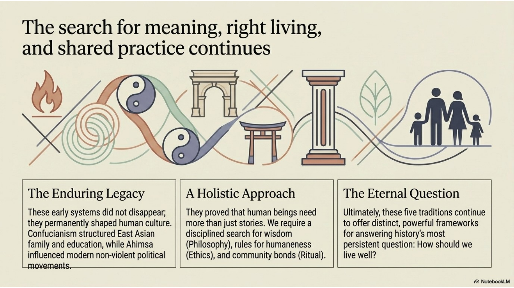
The traditions in this chapter continue to matter because they shaped culture, ethics, philosophy, ritual, and daily life. They are not just ancient historical topics. Their ideas still appear in modern discussions about non-violence, environmental care, meditation, martial arts, education, family responsibility, social order, and reverence for nature.
A useful way to summarize the chapter is through three layers. Philosophy asks what is real and meaningful. Ethics asks what people should do. Ritual turns belief into practiced action. Early religions mattered because they worked on all three levels at once.
Zoroastrianism shaped ideas about moral struggle and judgment. Jainism shaped powerful ideals of non-violence. Taoism shaped ideas of natural balance and non-forced action. Confucianism shaped family, education, leadership, and social ethics in East Asia. Shinto shaped Japanese identity, shrine life, festivals, and reverence for sacred place.
The eternal question remains: How should we live? A strong student answer should explain how each tradition answers that question, not just identify names or symbols.
Researching Founders, Sages, and Traditions
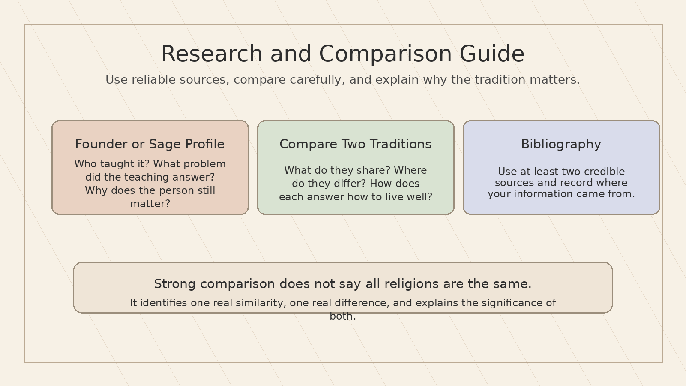
Some Chapter 3 work asks students to research one founder, teacher, sage, or tradition and provide a bibliography. That means the chapter reading can prepare you, but you still need reliable outside sources for the research portion.
For a founder or sage profile, identify the person and tradition, summarize the person’s key teaching, explain what human problem the teaching addressed, and describe why the person still matters. Strong choices include Zoroaster, Mahavira, Lao Tzu, Chuang Tzu, Confucius, Mencius, or Hsun Tzu. Shinto is different because it does not have one founder, so a Shinto profile may focus on a mythic figure, shrine tradition, or community practice if the assignment permits it.
For a comparison of two early religions, use the same categories for both traditions: ultimate focus, key figure or source, view of the problem in human life, guiding practice, ritual life, and cultural impact. This prevents shallow comparison.
Use reliable sources. Better sources include museum pages, university resources, academic encyclopedias, reputable books, and official or community-grounded religious organizations. Weak sources include unsourced blogs, anonymous pages, AI-generated summaries, and pages that try to sell something while pretending to educate.
A bibliography should record where your information came from. At minimum, include the author or organization, title of the page or book, publisher or website, date if available, URL for online sources, and the date you accessed it if your teacher requires that format.
Do not flatten traditions into stereotypes. For example, Jainism is not only “vegetarianism,” Taoism is not only “yin-yang,” Confucianism is not only “obedience,” and Shinto is not only “shrines.” Those are entry points, not complete explanations.
Comparison Planning Tool
| Category | Question to Ask |
|---|---|
| Ultimate focus | What does the tradition treat as sacred or most important? |
| Human problem | What problem does it identify: evil, harm, disorder, imbalance, impurity, selfishness, or uncertainty? |
| Path to right living | What actions, virtues, rituals, or disciplines does it ask people to practice? |
| Ritual and symbol | Which rituals or symbols make the belief visible? |
| Cultural impact | How did the tradition shape society, ethics, family life, politics, art, health, festivals, or identity? |
Possible Founder or Sage Profile Choices
| Person / Tradition | What to focus on |
|---|---|
| Zoroaster / Zoroastrianism | Ahura Mazda, truth against falsehood, moral choice, good versus evil. |
| Mahavira / Jainism | Ahimsa, self-discipline, liberation, non-possession, respect for living beings. |
| Lao Tzu / Taoism | The Tao, naturalness, simplicity, harmony, Tao Te Ching. |
| Chuang Tzu / Taoism | Paradox, perception, butterfly story, humility about certainty. |
| Confucius / Confucianism | Ren, li, education, virtue, family, proper relationships, social harmony. |
| Mencius or Hsun Tzu / Confucianism | Different views of human nature and the need for moral cultivation. |
Chapter 3 Glossary
- Ahimsa
- Non-harm or non-violence toward living beings; the central Jain principle.
- Ahura Mazda
- The Wise Lord and supreme good reality in Zoroastrianism.
- Amaterasu
- The Shinto sun goddess and one of the most important kami.
- Angra Mainyu
- The destructive or evil force opposed to Ahura Mazda in Zoroastrian thought.
- Avesta
- Major collection of Zoroastrian sacred writings.
- Chuang Tzu / Zhuangzi
- A Taoist sage known for stories and paradoxes, including the butterfly story.
- Confucius
- Chinese teacher associated with Confucianism and moral/social order.
- Dualism
- A way of understanding reality as a struggle between opposed forces, such as good and evil.
- Ethics
- The study and practice of how people should act.
- Five Relationships
- Confucian relationships: father/son, ruler/citizen, husband/wife, older/younger sibling, friend/friend.
- Gathas
- Zoroastrian hymns associated with Zoroaster.
- Hsin / Xin
- Confucian faithfulness and trustworthiness.
- Jiva
- The soul in Jainism; Jains teach that living beings possess jiva.
- Kami
- Sacred presences or spirits in Shinto associated with nature, place, ancestors, and forces of life.
- Karma
- The law of cause and effect; actions create consequences.
- Li
- Confucian ritual propriety, proper conduct, and respectful outward behaviour.
- Mahavira
- Jain teacher associated with the re-establishment of Jain practice and ahimsa.
- Moksha
- Liberation from the cycle of rebirth.
- Norito
- A Shinto prayer, often used in purification rituals.
- Philosophy
- A disciplined search for wisdom, truth, meaning, and reality.
- Ren / Jen
- Confucian humaneness, benevolence, empathy, and goodwill.
- Ritual
- A repeated symbolic action that expresses and reinforces belief.
- Ritual purity
- A state of preparation for sacred action, especially important in Shinto.
- Sallekhana
- A Jain practice of gradual fasting to death under strict spiritual conditions.
- Tao / Dao
- The Way; the natural order and source of harmony in Taoism.
- Torii
- A Shinto gate marking the approach to sacred shrine space.
- Wu wei
- Taoist non-forced action; acting without unnecessary force or resistance to the Tao.
- Yi
- Confucian rightness or justice.
- Yin and yang
- Complementary forces whose balance is central to Taoist thought.
- Zoroaster / Zarathustra
- Teacher traditionally associated with Zoroastrianism.
Chapter Synthesis
A strong understanding of Chapter 3 connects names, concepts, and practices. Zoroaster connects to Ahura Mazda and moral dualism. Mahavira connects to ahimsa and liberation. Lao Tzu and Chuang Tzu connect to the Tao, yin and yang, wu wei, and questions about reality. Confucius connects to ren, li, virtue, education, and social harmony. Shinto connects to kami, torii, shrine practice, and ritual purity.
The most important mistake to avoid is treating these traditions as random vocabulary lists. Each tradition offers a serious answer to the question of how human beings should live.